fanhan-inside 2022-09-28T02:35:11Z 先备份情报兼素材：
范某截图备份于此
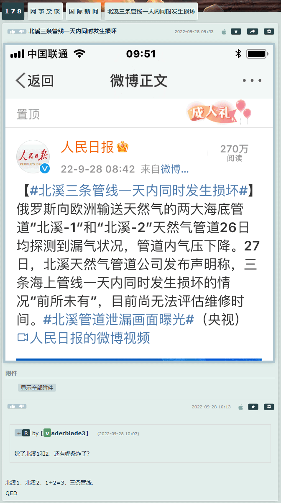
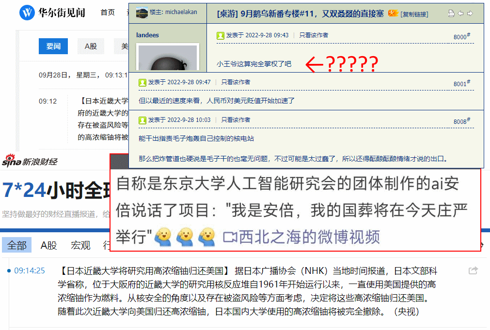
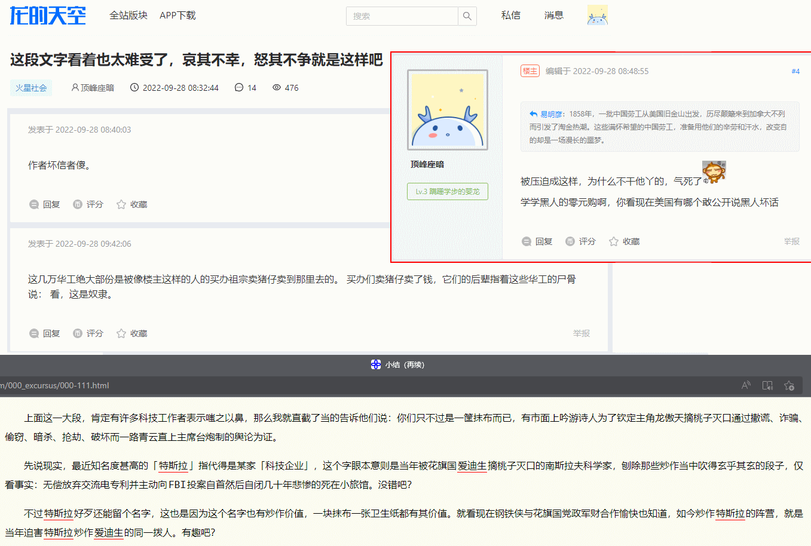
顺便写几句有点关系的。最近又看见又有谁谁「写小作文」了，除了「神转折骚操作」之外没有其它目的。
不过呢，「神转折骚操作」的高潮已经在「蒋凡后院起火」那次迭起过了嘛⸺我这「忠实记录历史」的旁观者都能总结出美食「九转大肠」来还意犹未尽 ⸺繁荣的简体中文互联网上活跃的多频道网络媒体（如果工资稳定保证各工位担当发挥水平稳定的话）再玩花活不会超过天时地利人和一应俱全的那套文案。
前一篇日志妄图自我超越，根据眼熟的那些砥砺奋进十年来追着我狂喷的「多频道网络」媒体老朋友们（由于欠饷而有气无力的各工位担当炮制的牵强附会破绽百出的歪理邪说）的一贯口径，先罗列了十层递进关系的剧情，以「安倍平账国葬 」为高潮，后面补个尾声，见好就收了。
再往后还有没有如此充沛且应景的素材⸺除了脑壳里只有红白两色液体的肌肉棒子之外，接受过义务制教育的人民群众不需要色目情报掮客伙同娱乐至死の色目逗哔掰开了揉碎了解读⸺可以提供如此丰富的舞台效果，现在还不知道。
总之，权威机构认证的直系血亲当面质疑我的身份证之存在唯一稳定性已经整整三年了，咋没有这三年（乃至上溯到据骗子告知有骗子于2019年使用“微信”注册“京东金条”账户当时）当中运作人脉冒名顶替的「微信用户」打着我的旗号到处招摇撞骗为非作歹，惹毛了大批雌权主义者及其舔狗蜂拥而上写我的「小作文」呢⸺我憋着搜集这些素材写「大作文」呢！
fanhan-inside 2022-09-28T03:34:44Z 顺便举个例子解释什么叫「大作文」。
先看情报兼素材（就是砥砺奋进十年来色目情报掮客追着我狂喷并有娱乐至死の色目逗哔阴阳怪气敲边鼓捧场说风凉话的那种「小作文」体裁）：
范某截图备份于此
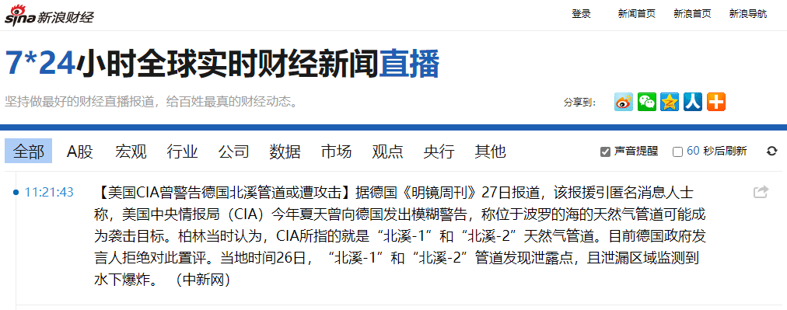
然后我就用这些情报兼素材，写了篇「大作文」《范版西幻设定集》之十七〈冠由下生乱自上作〉 ，以下摘录片段：
卡壳世界The Kock World ・作文composition
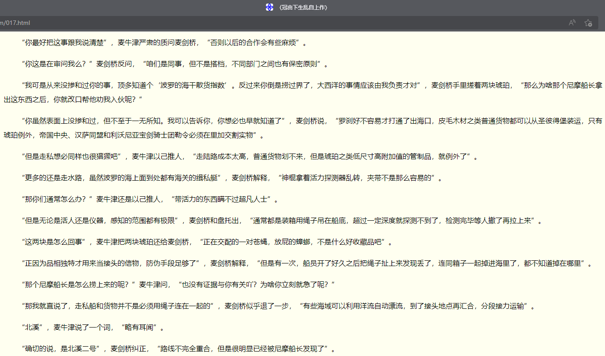
就是这样，码字时按照职业习惯「无一字无来历」而已。
fanhan-inside 2022-09-28T20:50:39Z 补充情报兼素材 ：
范某截图备份于此
先直接说关键之处：
砥砺奋进十年来叫嚣着「家里有矿」于是收买了大批色目情报掮客裹挟大批娱乐至死の色目逗哔追着我狂喷并且豢养了大批江湖好汉草莽豪杰纠集大批地痞流氓泼皮无赖绕着我转悠为非作歹的「富二代」它们家老爷子老太太在「苏共中共 二十大」上没能冻蒜中央（候补）委员……会发什么什么事情？
上面这个尖锐的问题很好解答：
那么进里屋听秘密报告的待遇就没戏了，没准自己还成为秘密报告上面罗列的人名⸺当然是反派，没准还是典型。
补充点背景：
十八个大投票的时候延期了一段时间，就为了把谁选为「中央候补委员」。有关部门临时工颇有北洋风采，有组织有纪律还有家伙事儿，碰上「选举事故」了不用摔杯为号就蜂拥而出，按照组织分配的人盯人战术一个个党代表「做工作」直到那谁「选上」为止。
或者直说了吧：
中央候补委员本来就是按照得票数字从前往后排列，若是截止到那谁为止恐怕万八千人都有了⸺每年都要去鸟巢开会，全党全军全国各族人民脸上不大好看⸺所以需要走通「人脉」修改「考试成绩」把那谁的「名次」往前提到既定名单末尾。
而十九个大之上也有戏剧性效果，在《范版东幻异闻录》题外话〚四〛当中已经备份了「码字事故」的前因后果：
邦昌時代くにまさじだい ・別題べつだい
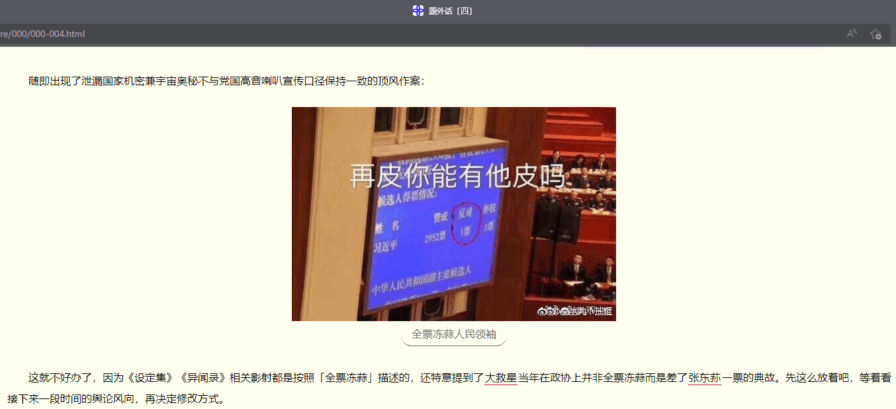
这都是小意思，对于字面意义上的「换届」，要参考十年前发生的事情：十八个大之前薄熙来被拿下，之后周永康被拿下，然后「肃清余毒」肃了近十年，无论哪儿拿人都是这套说辞。
薄熙来也就罢了，以前有过先例，而涉及周永康就有说法了，除了「刑不上常委」的潜规则之外⸺没有任何白纸黑字的档案文件记载，也不会有任何权威机构认证这种说法 的真实性 ⸺就是「谁先坏了规矩」的真理标准大讨论：
「百万雄师已经把北京城塞满了，再从外省抽调狼牙棒进京占地盘，就会有“武直十”在头顶盘旋」「条子跟错了人，不是假的也是假的」这种说法，就是那时候开始流传的。
所以，今年「富歇转世灵童」被拿下，那么去年在各大权威机构当中呼风唤雨的人民警察⸺保护伞没出事那么假的也是真的，补办个「下放基层挂职锻炼」手续就能把在实体派出所办公室当中坐稳实体工位签署实体文件之类活动都合法化，而一旦保护伞出事，那么真的也是假的 ⸺都有多少被权威机构认证为「距离警察局长住址几百米的印度假警察局当中身着横店戏服的演员」呢？
尤其是最近「唐山烧烤店打人事件」，普遍共识都是「被拉清单的这票混混的头顶保护伞倒了」，这种时候就要举一反三触类旁通，必要的时候还得逆向思维：
如果到处拉票贿选的党国栋梁青年才俊「富二代」同时还在到处约谈江湖好汉草莽豪杰甚至地痞流氓泼皮无赖，指天发誓拍胸脯保证「爷冻蒜稳得一哔，真出选举事故了，你把我脑壳拎走」……于是在「期货保护伞」包庇之下，鸡鸣狗盗之徒绕着我为非作歹十年整，真等开会了丫牛哔哄哄出场企图全票冻蒜……未果沦为笑柄，之后会发生什么事情？
fanhan-inside 2022-09-29T22:03:49Z 补充情报兼素材：
范某截图备份于此
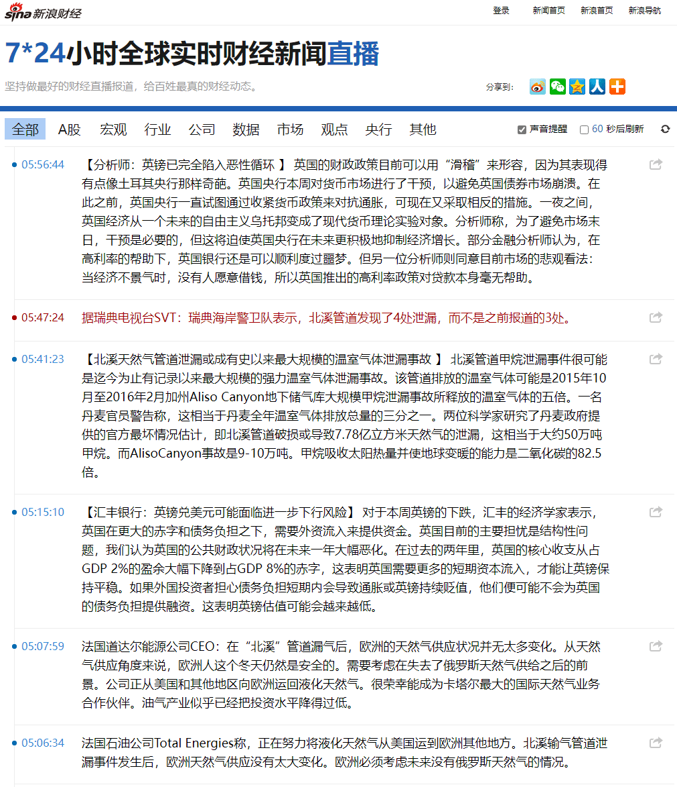
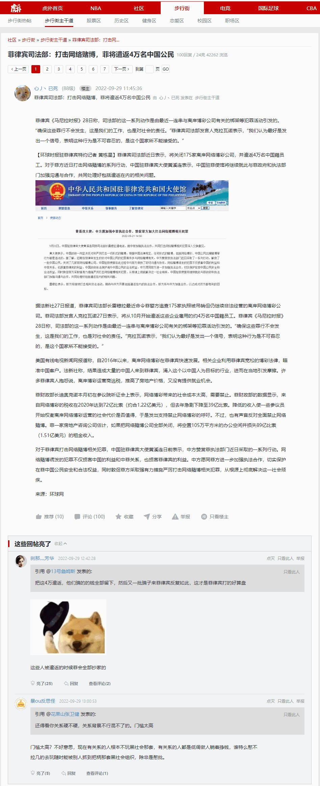
长话短说，可以结合个人亲身经历简单解读：如果「未办理暂住证の外地来京撒谎偷窃诈骗务工 人员 」随着经济形势下行不能继续给「中央军委/政法委」的保护伞提供资金以供贿选了，眼瞅着就要被遣返 ……这时候还没到苏共中共 二十大召开，随时可能发生包括但不限于肉体消灭的各种情况，还需要这批炮灰耗材「做事」的保护伞会怎么处理？
很简单，先通过「人脉」直连户部刑部服务器筛查大数据，找到像我这样的户口本上的名字逐个消失最后只剩下自己的「北京市常住人口」，再通过「人脉」约谈相关户口所在社区的「防疫部门」做到隔绝内外（我明知道南里有一堆证件乃至财产，但是回去也进不去小区），然后「走私军火毒品人口」的歹徒就可以冒名顶替扎根了……南里的某个老太太在2012年我回去给户口本奶奶大同文盲石老太太办丧事的时候就恶狠狠的盯着我，今年上半年还特意到北里来盯着我呢……估计是外地甚至外国走私团伙骨干的家属。
不惮以最大的恶意揣测，我在南里的住宅已经被租出去至少半年了，租金都让拿着我证件的骗子收了 ⸺混混放话「全球遭瘟就是给你小子一个人准备的」并非吹牛哔，最起码在阻挠我回去弄清真相这件事上「防疫措施」非常管用⸺因为之前南里住宅就是「真・夜不闭户」，有「居委会」代管，太平间仵作说「死了好几天」的那个时间段都发生了什么 ，家贼攥在手里的那堆证件（南里的户口本以及南里北里两套房本）都用来干什么了，「官方」⸺除非认为街道办事处没有行政级别⸺肯定知情。
本来的如意算盘就是把我憋死在北里，然后南里就有本来应该被遣返的「走私军火毒品人口」的歹徒冒名顶替落户了⸺我相信自打2002-2003年间大同文盲石老太太策反整个小区（街坊邻居各个看我的眼神都不对）之后，南里已经变成贼窝整整二十年了 ⸺这就是前一阵「海外爱国华侨」口音的「京东」员工联系我让出面注销「金条」账户的背景：其它「期货中央委员」也在往北京塞「自己人」，同时鸡蛋里挑骨头全面筛查其它「竞争对手」从家乡调来的部曲亲兵义子包衣（就是口音独特的江湖好汉草莽豪杰）以及在北京收买的内应（就是口音熟悉的地痞流氓泼皮无赖）并举报之。
fanhan-inside 2022-09-30T00:01:01Z 补充舆论：
范某截图备份于此
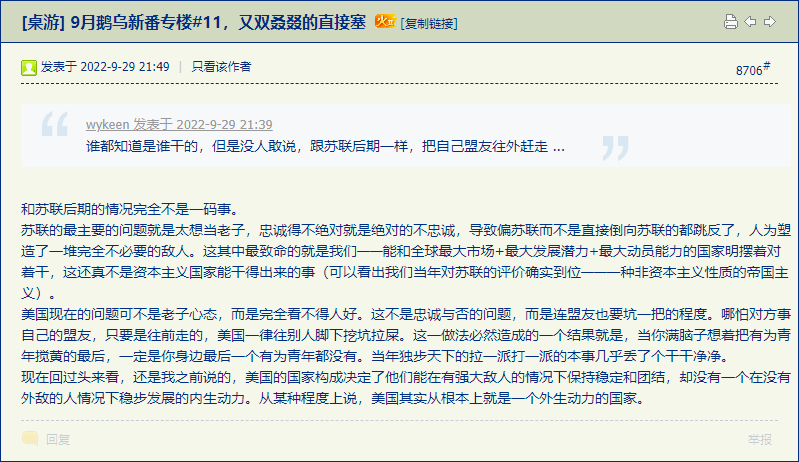
简单解读：
这不就是传说中的「麻将精神」么？看住下家，盯着对家，防着上家，自己糊不了也不让别人糊。
旁征博引：
台湾作家柏杨先生在《丑陋的中国人》一书中感叹：“一个中国人是条龙，三个中国人是条虫；一个日本人是条虫，三个日本人是条龙”。
然后先插播其它情报兼素材，从「小作文」乃至「大作文」更进一步到上述引用的出处「划时代大作」相关话题当中：
邦昌時代くにまさじだい ・別題べつだい
⸺《范版东幻异闻录》题外话〔48〕邦昌時代の文化产业と武侠题材
我大约是从2004年开始在起点充值看网文，一直持续到充不进去的时候（2020年7月27日）。从那时到现在两年多了，没有再给任何「内容供应商」充值过，并且没有任何「网购」，信用卡仅限超市购物。并且转过年来（2021）新寄到的信用卡，由于要用「哎屁屁」开卡，迄今为止都没有开卡，遑论使用。
这也不是孤证，之前一直使用的收费邮箱，本来也是可以通过信用卡走「银联」渠道续费的，结果有一天通知只能使用「微信」充值，于是只好放弃 ，继续使用包括但不限于微软谷歌在内的大手情报工学会社提供的免费邮箱。
还有许多零碎事件，从2019年中开始逐步升温。各种色目情报掮客与娱乐至死の色目逗哔乃至现实中的色目混混鸡鸣狗盗之徒，不约而同的正告我「不用微信就得用支付宝，你丫选一边站队吧 」。其中「微信」的广告力度空前强大，也有江湖好汉草莽豪杰地痞流氓泼皮无赖说走了嘴：当时马云已经退休，由张勇接班，后来「太子」蒋凡还从合伙人变打工仔；但是马化腾并没有退休，而张小龙还不能抢班夺权……未果沦为笑柄。
这些事情与我没关系，因为我不用智能手机。幸亏如此，否则2019年用「微信」注册「京东金条」账户的那个冒牌货，所有为非作歹都不需要权威机构认证，在腾讯内部甚至微信事业部内部，就能把全套档案伪造完毕⸺然后假惺惺的叫嚣着有法可依有法必依执法必严违法必究，以传播南山必胜客的荣光。
严密的考虑问题，就算我一直也没用过智能手机⸺并且办理联通宽带业务时送的4G卡号还从来没用过已经伴随着业务结束而终止了，前一阵特别确认了这件事⸺也不排除还有个冒牌货在2019年泽连斯基刚冻蒜大盖特曼而我刚转让了原公司股份从此再无关系之后，用「支付宝」注册了什么金融账户从事撒谎偷窃诈骗活动，眼下只不过还没曝光（于是暂时没有「海外爱国华侨」口音的党国栋梁联系我露面注销）而已。
从这个角度再回顾「健康码」「行程码」之类必须智能手机才能运作的认证系统 ，以及之前多年就已经外包给「微信」「支付宝」的各种国家机器经常项目业务 ，境内十亿「移动互联网用户」当中真不定有多少人在2019年就被腾讯内部人士通过「技术」手段注册了大批撒谎偷窃诈骗账户⸺当然不会有任何「系统」通知⸺一直运转至今。
囧斋Kargsburg 起居注・日记
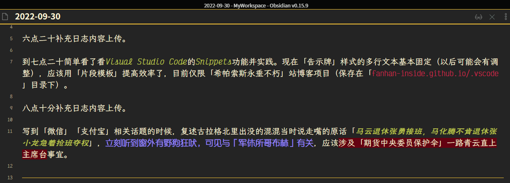
fanhan-inside 2022-09-30T23:23:46Z 备份情报兼素材：
范某截图备份于此
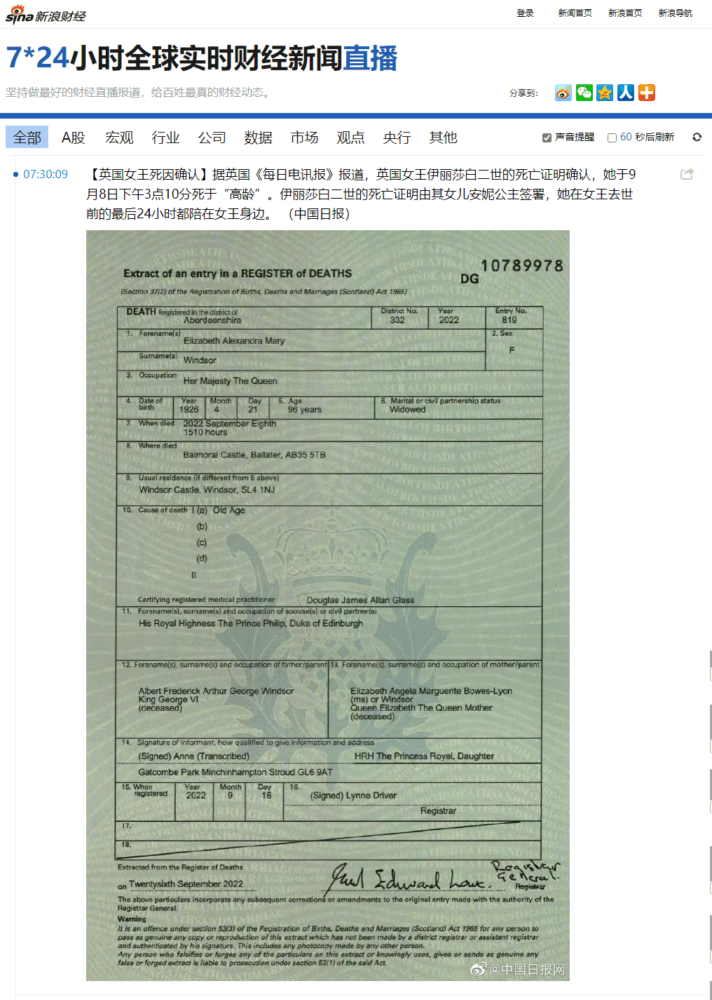
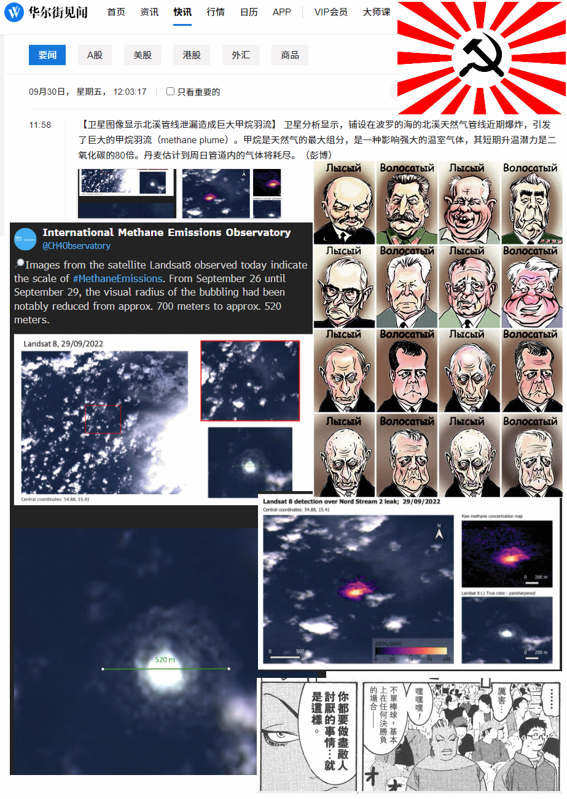
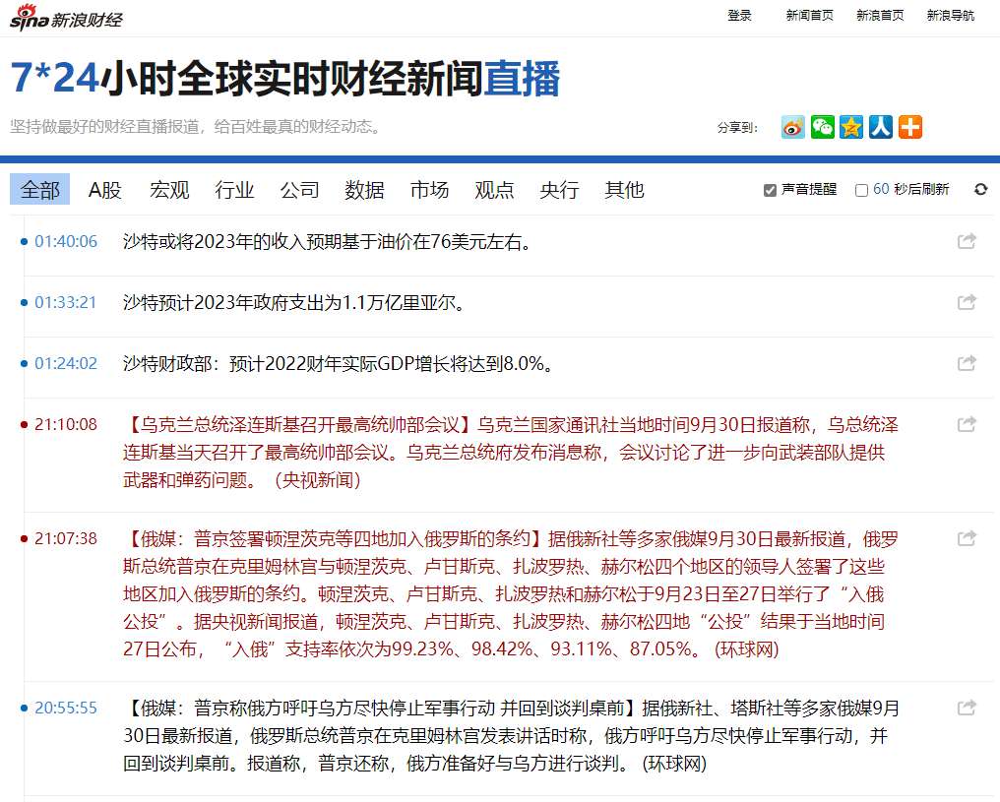
备份舆论兼评论：
范某截图备份于此
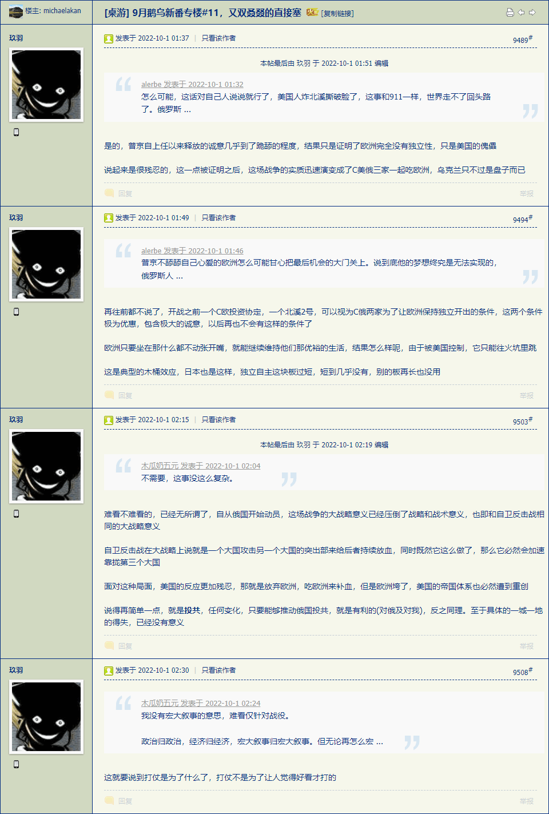
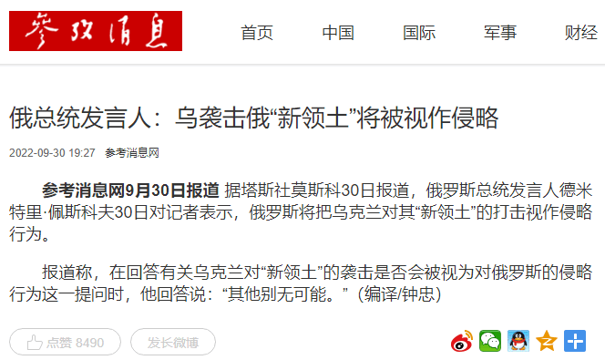
备份权威机构认证「半殖民地半封建社会当中的“没有自由意志の 关系户”如何随着境外“自由意志 变量”的变化而变化 」的证据：
范某截图备份于此
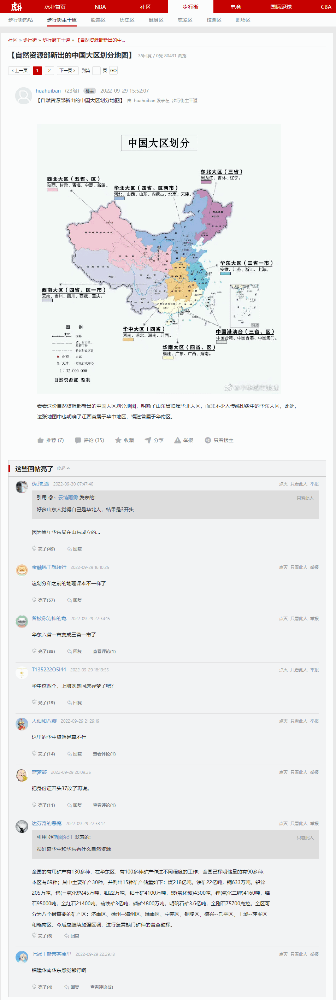
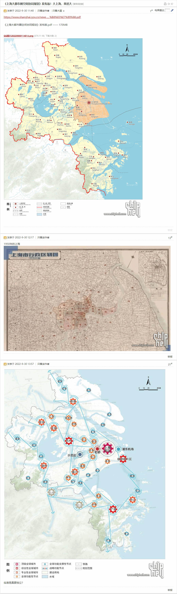
备份到这里，还没开始写自己的观点和，立刻又听见窗外野狗狂吠，可见与「军休所哥布林」有关⸺还是拿着智能手机在室外随时接受「摄像头」至少是远程桌面之类实时监控屏幕文本框（还没发出去呢）并逗狗叫的外包武德的日常工作 ⸺应该涉及最近正在到处贿选拉票指天发誓拍胸脯冻蒜板上钉钉的「期货中央委员」也就是古拉格北里附近江湖好汉草莽豪杰地痞流氓泼皮无赖之「保护伞」一路青云直上主席台相关事宜。
那么（在野狗狂吠伴奏中）暂时不进行掰开了揉碎了解读前有后果来龙去脉的科普工作，直接说结论：
接下来的剧情发展
国际方面：
罗刹按照「有法可依有法必依执法必严违法必究 」原则发动了「伟大光荣正确の卫国战争 」，直接扔战术核弹扭转「饂飩四国乌东四州
うどんしこく
有核弹不用留着下崽么‽‽‽ 」
国内方面：
趁着白金汉宫老佛爷刚驾崩，查理三世头像钢镚出炉的大好时机，马伯庸跳出来宣称「西肃慎后清国太祖高皇帝 」之鸟位不是任何山贼土匪「杀来京东」就能夺了 的，并再次强调「讨厌的人都要死 」治国理政实践。
互联网无国界の世界公民 方面：
《启示录》第四幕〈绿马の核污染〉开场 ，各种广告文案开始充沛于（尚未被“恐怖分子”炸断的）海底光缆连接的环球赛博朋克空间。
注：对于幽州外景片场摄影棚擅长的「头顶清真瓜皮绿帽脚踩五十块钱包月的清真破鞋一路小跑追清真公交车 」的话剧文艺理论来说，每一「幕」都有好多「场」已经是常识了。所以这次先扔个核弹开路，也只是字面意义上的「拉开帷幕」，名角大腕们还得再演许多「场」之后才有「闭幕式」 ……然后「后期制作」，再然后才能把「高清复刻版」放上流媒体站点推送给会员并收费。
《一千零一页》
莫谈国事只谈风月，就说那南不列颠及北爱尔兰联合王国理查三世在1485年博斯沃思战役当中的表现吧：
失了一颗马蹄钉，丢了一个马蹄铁；
丢了一个马蹄铁，折了一匹战马；
折了一匹战马，损了一位国王；
损了一位国王，输了一场战争；
输了一场战争，亡了一个帝国。
For want of a nail the shoe was lost.
For want of a shoe the horse was lost.
For want of a horse the rider was lost.
For want of a rider the battle was lost.
For want of a battle the kingdom was lost.
And all for the want of a horseshoe nail.
据称南不列颠及北爱尔兰联合王国钦定文豪莎士比亚当时就念了一句诗：「马！马！一马失社稷！ 」（A horse! a horse! my kingdom for a horse!）⸺《理查三世》第五幕第三场①
注①：网上资料显示出处为「Richard III ACT V SCENE IV」（链接 ），后面还有「SCENE V」，未必不正确，版本不同而已。这里为了「无一字无来历」的在吹捧色目钦定文豪的色目逗哔看来的所谓「强迫症」，以手头实体书外研社出品《莎士比亚全集》第1379页为准（最后的第五幕总共只有三场），据商家称引进的底版乃1623年「第一对开本」时隔300年首次全面修订。
⸺《羌笛何须怨杨柳，春风不度玉门关》
fanhan-inside 2022-10-01T08:22:54Z 补充权威机构认证过的权威人士发言：
范某截图备份于此
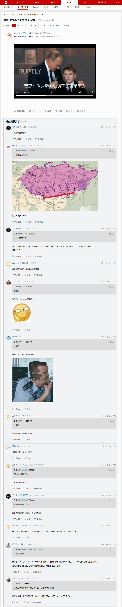
备份视频：
范某录像备份于此
末尾有一句「私货」：这样的普京大家喜欢么？
这是个见仁见智的问题，作为「黄俄罗斯」钦定大目标的主力，大批汉语流利的「黄皮鹅孝子」，看网络舆情……就很喜欢。
补充「关系户因变量」的后续：
范某截图备份于此
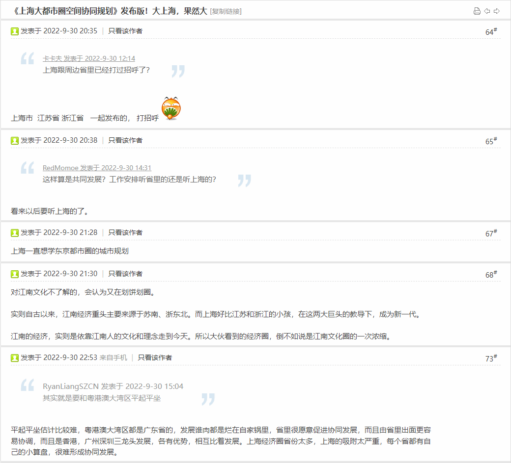
这里面有段花絮。因为想起来似乎有一部「废土」题材的日本漫画，开头就是「关东地区被新型爆弹摧毁」，日本地图上东京位置有个覆盖关东平原的半球形，然后「九个小时之后第三次世界大战爆发」，罗列地名：伦敦、巴黎、莫斯科、纽约……
印象里似乎是《苹果核战记》的开头，但是找了网络版和实体书，发现都没有这几页。或者就是记错了，日本文艺工作者动辄「自黑」挨核弹的情节也不是什么新闻。但是在根红苗正忠君爱国的血脖子红卫兵那里，就成了「利用日本仆街画手“假惺惺描绘日本挨核弹的场景”指桑骂槐妄议中央，阴谋破坏“长三角协同化发展一张蓝图绘到底”战略，是一大发明 」了也。
然后就是今天下午发生的事情。
先备份经济竞技 新闻：
范某截图备份于此
再备份过期订单：
范某截图备份于此
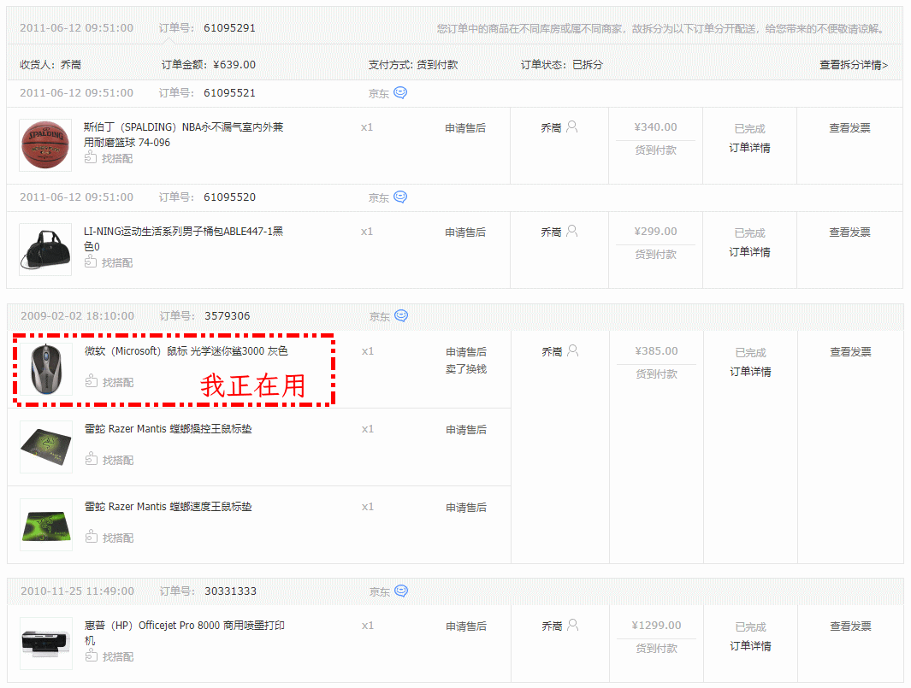
最后备份「真・流水帐」：
囧斋Kargsburg 起居注・日记
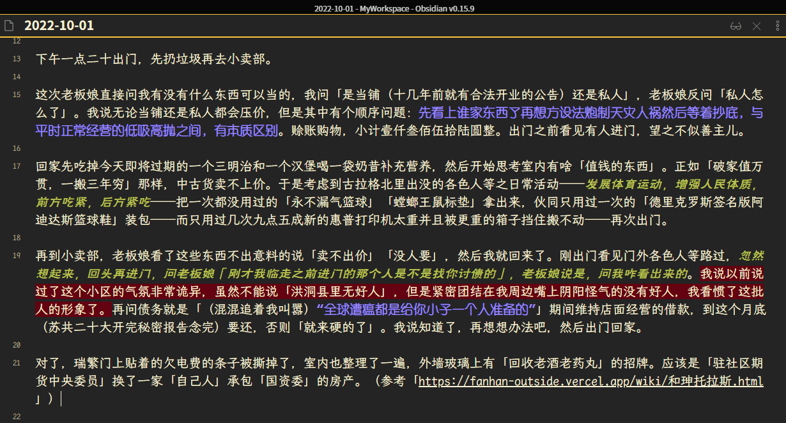
先说句「亮点自寻」吧，然后直接给出观点：
亮点自寻
权威机构认证的事实：权威机构公安部发布的甲级战犯通缉犯 各个都有身份证，而《骑乘之王》男主角「弗拉基米尔大帝 」反而没有。
网络舆论与民间动向：脑壳里只有红白两色液体的肌肉棒子谆谆教导人民群众曰「是可忍孰不可忍 」「是中国人就武装保卫苏联啊不鹅螺狮啊啊啊啊 」。
目前囧斋的客观条件未必保证接下来的长篇大论能写完发完。
fanhan-inside 2022-10-01T08:54:39Z 鉴于目前状况（电费余额见底并且不知是否可以继续赊账代充）赶紧以提纲挈领的情报兼素材收尾本篇日志：
范某截图备份于此
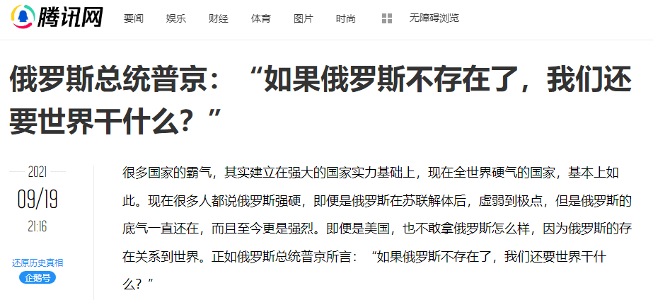
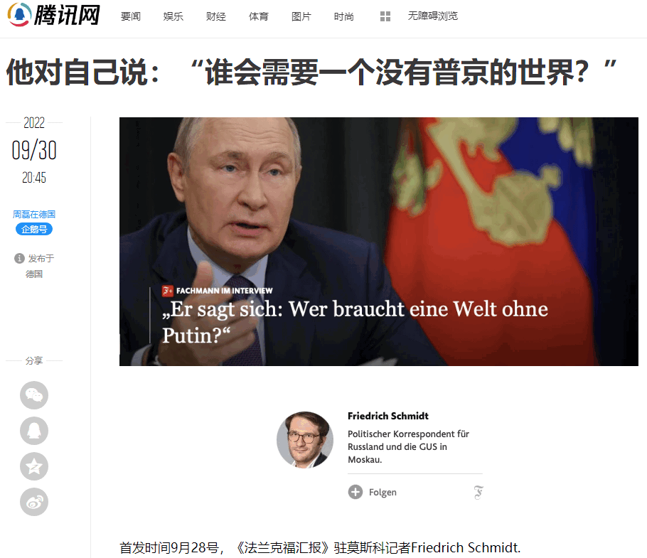
化用到剧情当中，当然要安排给幕后黑手大反派「可萨汗国」喽，再次提醒读者「可萨人信犹太教 」，现实中既可以伪装成「傻哔绿人」，也可以伪装成「我们没文化的人就是这样的」模仿游盗部落做派的脑壳里只有红白两色液体的肌肉棒子，还可以在（反共并州大厦旁边古拉格北里军休所蹲点の）「期货中央委员保护伞」的掩护下洗白染红为衣冠楚楚的「金融精英」：
邦昌時代くにまさじだい ・本文ほんもん
“你看老流氓那一身职业装扮，以及脸上的职业笑容，还有哼的职业声乐”，郭春海，“哪怕你没有社会经验也见过吟游诗人放话，丐帮”。
“说我贫，那我就贫，我不偷不摸是好人 ”，柴禾妞念了两句诗，想了一下又念了两句，“这个数来宝的流口辙，我不耍贫嘴不能活 ”③ 。
“索虏那边才流行这个”，柴守宫纠正，“云州有三宝，煤炭大佛数来宝”。
“咱们这边是莲花落”，郭春海纠正，然后念了两句又两句诗，“巢窝里放债现过手，他管接客俺使钱。线上放债没赊账，他管杀人俺管担 ④ ”。
“这就是污衣派和净衣派？”柴禾妞想起吟游诗人放话，“污衣派碎催多，净衣派领导多”。
“现在污衣派领导也一身光鲜了”，柴守宫回忆案例，“网上那些炒作国难家难到处募捐的，众筹集资的，看上去都挺体面是吧？采生折割到处扯着老百姓化缘的才上不了台面”。
③ 马志明黄族民《数来宝》相声
④ 丁耀亢《续金瓶梅》第十六回〈沈乞儿故园归梦 翟员外少女迷魂〉
⸺《范版东幻异闻录》〔022〕四渡汉水出奇兵与百万雄师撵救星